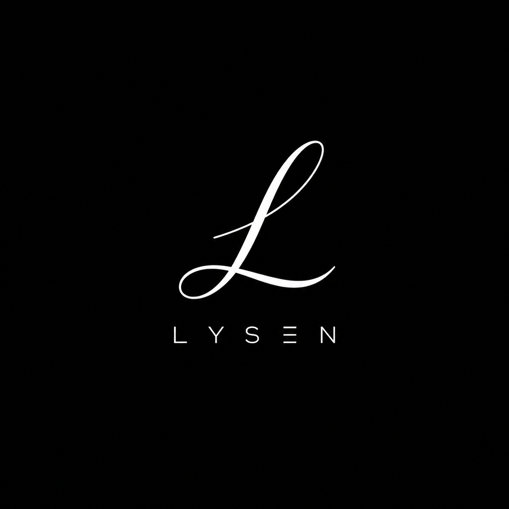

¿A dónde quieres entrar?
Elige según lo que estás buscando. Los pedidos se atienden por WhatsApp.

LYSEN
Fragancias y tecnología
Entrar a LYSEN →
Sueño y relajación
Entrar a Sleep More →
¿Dudas? Escríbenos por WhatsApp: 320 251 5698